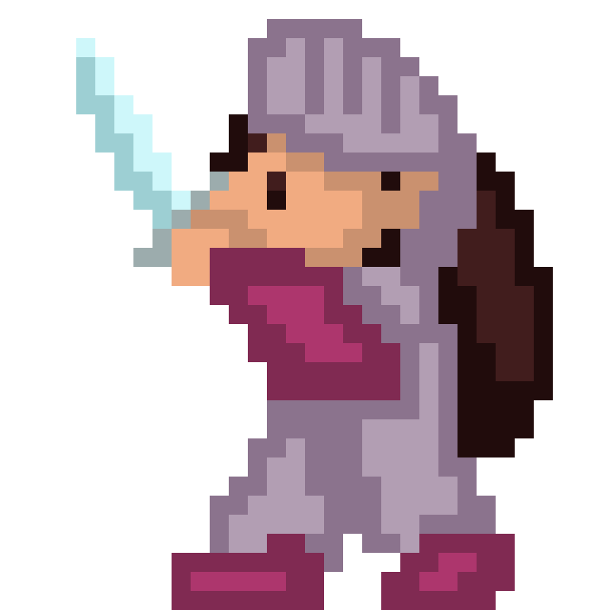
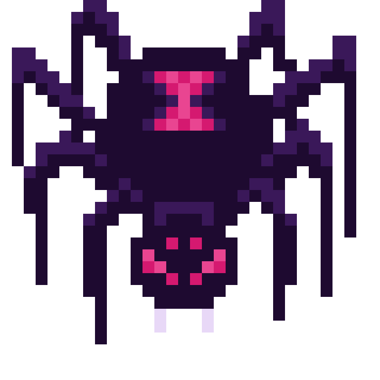

The Psychology of Play
I grew up in a big Nintendo family, racing in Mario Kart and falling in love with interactive media in my living room. But I really fell in love with The Legend of Zeldafranchise, from the classic 8-bit game to its gorgeous sprawling open worlds, showing me how important environmental design is to create an immersive, mesmerizing experience.
This video is an early exploration of that fascination, created for my Media Art and Design Practice class. Using Womp for the main 3D model and Unity for world-building, I experimented with lighting, animation, and environment to capture a blend of nature and magic inspired by my favorite franchise.


8-Bit Combat RPG
I'm currently pouring my creative energy into a passion project: an indie game that takes the nostalgic 8-bit mechanics of the original Legend of Zelda and breathes fresh life into the retro genre. While it follows the classic tale of a knight questing to save her princesses, my main goal is to subvert those familiar tropes through completely unique, fantastical world-building. I want to make a vibrant, highly creative environment full of magical characters and bizarre monsters, tied together by a story you organically uncover as you explore.
Tech Stack: Unity, Womp, C, Python
Check back for updates!